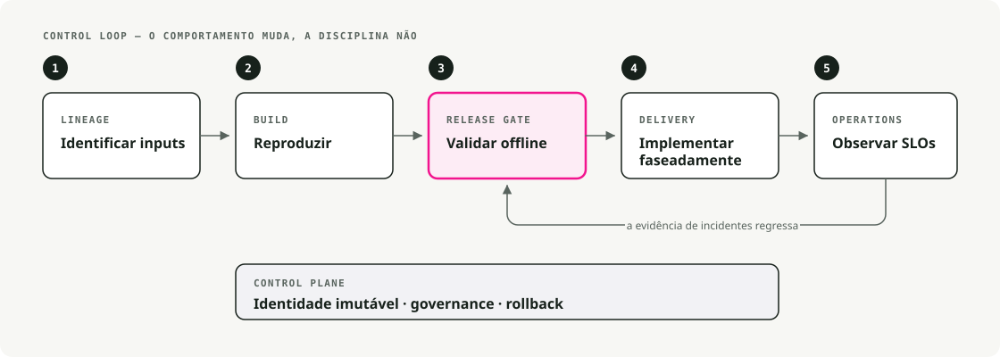
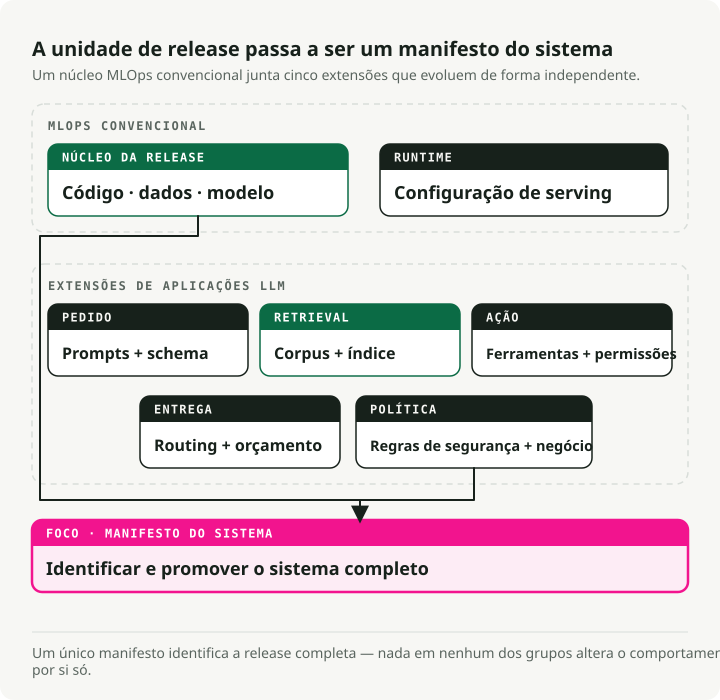
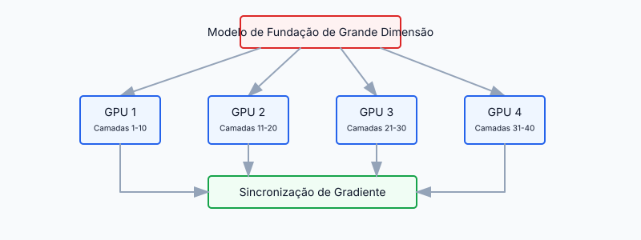
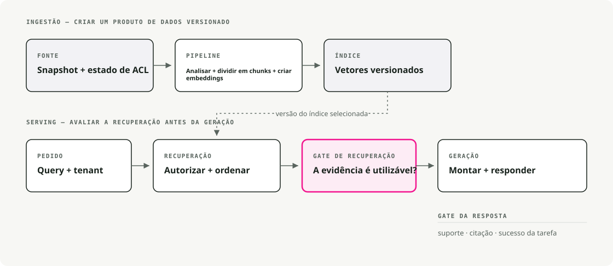
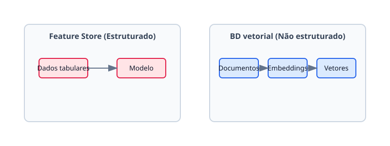
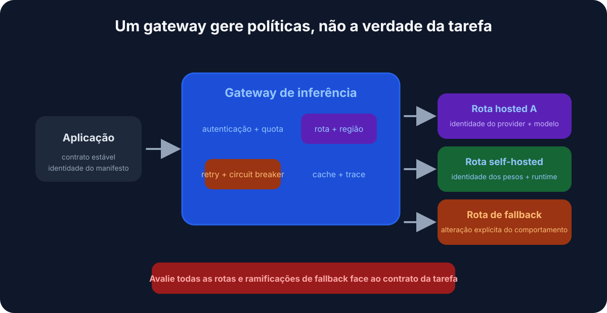
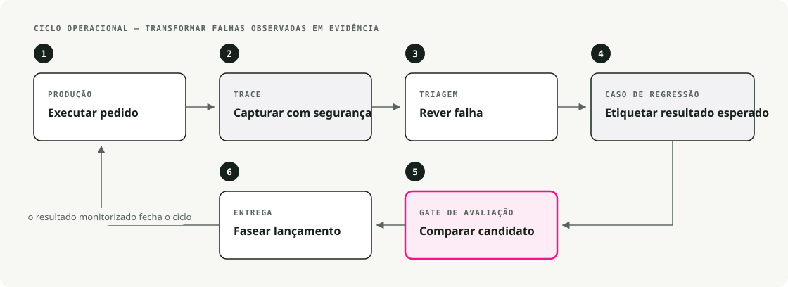

Tradução automática
Este artigo foi traduzido automaticamente a partir da versão original em inglês.
MLOps vs LLMOps: Infraestrutura para Modelos Fundacionais e Sistemas LLM
Os modelos fundacionais quebraram a maioria das premissas em que o MLOps clássico se baseava. Este texto apresenta de forma detalhada o que mudou, o que permaneceu e os padrões que preencheram as lacunas.
TL;DR: O LLMOps expande o MLOps com gestão de prompts/versões, pipelines de recuperação de informações, gateways de modelos, ferramentas de avaliação, mecanismos de proteção e capacidades de observabilidade para resultados não determinísticos. Mantenha a disciplina do MLOps, mas adicione métricas relacionadas com o contexto, custos, latência e qualidade das respostas geradas.
MLOps clássico antes dos modelos fundamentais
Há alguns anos, o MLOps referia-se essencialmente ao DevOps aplicado à inteligência artificial — automatizando o ciclo de vida desde a preparação dos dados, passando pela implementação, até à monitorização. Os modelos eram suficientemente pequenos para serem treinados do zero a partir de dados específicos de um domínio, e a infraestrutura refletia essa realidade.

1.1. Pipelines end-to-end
As equipas desenvolveram pipelines para extração de dados, treino, validação e implementação. O Airflow foi responsável pela orquestração de ETL e do processo de treino. Os sistemas CI/CD executavam testes e enviavam os modelos para produção. Os modelos eram distribuídos como contêineres Docker que forneciam endpoints REST ou executavam tarefas em lote. O objetivo de tudo isto era garantir reprodutibilidade e automação.
1.2. Rastreio de experimentos e versionamento de modelos
O MLflow e o Weights & Biases eram as ferramentas padrão para registar execuções, hiperparâmetros e métricas. Os cientistas de dados podiam comparar diferentes experimentos e reproduzir resultados de forma fiável. Os registos de modelos forneciam números de versão, o que facilitava a reversão de alterações quando um modelo mais recente apresentava desempenho inferior.
1.3. Treino contínuo e CI/CD
As pipelines foram concebidas para uma integração contínua de novos dados. Uma configuração típica realizava o retreino noturnamente ou semanalmente à medida que os dados chegavam, executava um conjunto de testes e efetuava o deploy automático caso tudo fosse aprovado. O Jenkins e o GitLab CI/CD garantiam que qualquer alteração nos dados ou no código desencadeasse de forma fiável a pipeline.
1.4. Infraestrutura e fornecimento de serviços
O fornecimento de serviços exigia recursos relativamente limitados — alguns núcleos de CPU ou uma única GPU para inferência em tempo real. O Kubernetes e o Docker eram as soluções padrão para serviços de inferência escaláveis. A monitorização abrangia três áreas: métricas de desempenho (latência, taxa de transferência, memória), métricas do modelo (precisão, deriva) e saúde do sistema (tempo de atividade, taxas de erro).
1.5. Repositórios de características e gestão de dados
No setor financeiro e de comércio eletrónico, as características processadas eram tão importantes quanto o próprio modelo. Os repositórios de características ofereciam um local centralizado para a sua gestão, mantendo a consistência entre o treino e o fornecimento de serviços. Os dados estruturados e a engenharia de características eram o foco principal. Os dados não estruturados — texto, imagens — eram tratados separadamente, fora desses repositórios.
Esta configuração funcionou bem até os modelos começarem a tornar-se muito maiores.
2. A mudança de paradigma: ascensão dos modelos fundamentais em grande escala
Por volta de 2018–2020, a situação mudou rapidamente. Os investigadores começaram a publicar modelos fundamentais — modelos muito grandes pré-treinados com grandes conjuntos de dados que podiam ser adaptados a diversas tarefas.
A evolução foi rápida:
- 2018–2019: O BERT e o GPT-2 tornaram o aprendizagem por transferência viável em larga escala.
- 2020–2021: O GPT-3 e o PaLM demonstraram o que é possível alcançar com uma escala massiva.
- 2021–2023: Modelos de imagem como o DALL-E e o Stable Diffusion impulsionaram a IA generativa para o mainstream.
- 2023–2024: Os modelos fundamentais passaram a ser a infraestrutura padrão — disponíveis na Hugging Face, no AWS Bedrock, no Vertex AI Model Garden e diretamente junto dos fornecedores de API.

Estes são os aspetos da infraestrutura de ML que os modelos fundamentais realmente alteraram.
2.1. Modelos pré-treinados em vez de treino do zero
Em vez de treinar um modelo desde o início, as equipas passaram a utilizar modelos pré-treinados e a efetuarem ajustes finos para a tarefa específica. O tempo de treino reduziu-se de semanas para horas. As necessidades de dados diminuíram de milhões de exemplos para milhares. Equipas mais pequenas conseguem lançar produtos de IA robustos sem a necessidade de contar com uma organização de investigação por trás delas.
Os modelos maiores (com bilhões de parâmetros) são geralmente utilizados tal como estão, através de APIs, ou são ajustados com adaptadores leves. A descrição das funções mudou: menos foco em “como construir um modelo?” e mais em “como utilizá-lo e integrá-lo?”
2.2. Tamanho do modelo e exigências computacionais
À escala dos LLM, todo o resto da stack também tem de ser adaptado. Um modelo com 175B de parâmetros não é simplesmente uma versão maior de um modelo com 50M de parâmetros — ele não cabe no mesmo hardware, não é treinado da mesma forma e nem é utilizado da mesma maneira.
Os problemas associados:
- Treino requer hardware potente (GPUs, TPUs) e recursos de computação distribuída.
- Paralelismo de modelo divide um único modelo entre várias GPUs.
- Paralelismo de dados sincroniza vários processadores GPU durante o treino.
- Infereção geralmente necessita de múltiplas GPUs ou ambientes de execução especializados para manter a latência controlada.
O DeepSpeed e o ZeRO (Zero Redundancy Optimizer) foram desenvolvidos especificamente para tornar viável o treino de modelos de grande porte. As exigências em termos de infraestrutura aumentaram exponencialmente.
2.3. O surgimento do LLMOps
A execução desses modelos em produção exigiu extensões às práticas clássicas de MLOps. Isso deu origem ao LLMOps — uma abordagem de MLOps especializada em modelos de grande dimensão, que mantém os mesmos princípios, mas lida com problemas diferentes:
- Computação: gestão de clusters GPU dispendiosos, e não de pools de CPU.
- Engenharia de prompts: moldagem do comportamento por meio do design das entradas.
- Monitorização de segurança: deteção de viés, conteúdo prejudicial e vazamentos de dados.
- Gestão de desempenho: equilíbrio entre latência, qualidade e custo por token.
Problemas que mal eram notados em modelos menores — como texto tendencioso ou vazamentos de dados de treino — tornaram-se riscos reais na escala dos LLMs.

O diagrama da NVIDIA ilustra como estas especialidades se sobrepõem: MLOps clássicos na camada externa, seguidos por GenAI Ops (qualquer modelo generativo), depois por LLMOps (modelos de linguagem grandes especificamente) e, finalmente, por RAGOps para sistemas com reforço por recuperação de informação. O objetivo desta estrutura em camadas é que cada nível interno se baseie nas práticas dos níveis externos — não as substitui.
Treinar um modelo com mil milhões de parâmetros excede a capacidade de uma única máquina. As infraestruturas modernas orquestram o treino em vários nós:

Dois tipos principais de divisão são relevantes:
- Paralelismo de modelo: distribui as camadas do modelo por GPUs (cada GPU executa parte da passagem forward).
- Paralelismo de dados: replica o modelo em várias GPUs e divide os dados de treino, sincronizando posteriormente os gradientes.
O PyTorch Lightning e o Horovod lidam com o treino distribuído em geral. O Megatron-LM da NVIDIA é a solução preferida para modelos transformers de grande escala. A stack JAX/TPU do Google serve para clusters TPU.
Há alguns anos, a maioria das equipes treinava em um único servidor. Atualmente, as plataformas de ML iniciam tarefas em clusters de GPUs, gerenciam falhas e agregam gradientes de dezenas ou centenas de nós, sem que o engenheiro precise se preocupar com isso.
3.2. Técnicas eficientes de retreinamento
Mesmo o retreinamento de um modelo com bilhões de parâmetros pode ser dispendioso. Existem métodos eficientes em termos de parâmetros exatamente por esse motivo:
- LoRA (Adaptação de Baixo Rank): treina um pequeno conjunto de parâmetros de adaptação; os pesos base permanecem congelados. Isso resulta numa redução significativa no consumo de recursos computacionais e memória.
- Ajuste por prompt: otimiza apenas os embeddings dos prompts; o próprio modelo fica congelado.
- Módulos de adaptação: insere camadas pequenas e treináveis entre as camadas congeladas.
Configurar o LoRA com peft:
from peft import LoraConfig, get_peft_model
# Configure LoRA
peft_config = LoraConfig(
r=16,
lora_alpha=32,
target_modules=["q_proj", "v_proj"],
lora_dropout=0.05,
bias="none",
task_type="CAUSAL_LM"
)
# Apply to base model
model = get_peft_model(base_model, peft_config)
model.print_trainable_parameters()
A infraestrutura tem de suportar o fluxo de trabalho em várias etapas: recuperar um modelo base a partir de um hub, aplicar deltas de pesos afinados e, em seguida, implementar a versão combinada. Os pipelines tradicionais tiveram de evoluir para conseguir lidar com esta etapa de personalização.
3.3. Engenharia e gestão de prompts
O novo elemento nos pipelines de ML modernos é o prompt. Com os LLMs, o prompt determina grande parte do que o modelo faz — muito mais do que os vetores de características alguma vez fizeram nos ML clássicos.
Isso tem consequências práticas. As equipas passaram a manter bibliotecas de prompts, a versioná-las como código, a realizar testes A/B entre variantes e a armazenar as versões dos prompts juntamente com as versões dos modelos no registo. Isto é verdadeiramente diferente dos ML clássicos, onde as entradas eram apenas vetores de características. Frameworks como o LangChain tratam a otimização de prompts como uma funcionalidade de primeira classe.
Uma evolução simples pode ser vista da seguinte forma:
v1: "Classify this text as positive or negative: {text}"
v2: "You are a sentiment analyzer. Classify: {text}"
v3: "Analyze sentiment. Return only 'positive' or 'negative': {text}"
Cada versão produz resultados diferentes. O acompanhamento e os testes de prompts tornam-se tão importantes quanto o rastreio dos pesos do modelo.
3.4. Geração Aprimorada por Recuperação de Informação (RAG)
Os modelos fundamentais possuem um limite fixo de conhecimento e uma janela de contexto finita. Para manter as respostas atualizadas e fundamentadas, a Geração Aprimorada por Recuperação de Informação (RAG) tornou-se uma prática padrão.

Em vez de treinar constantemente um modelo com novos dados — o que é lento e dispendioso — o RAG obtém os documentos relevantes no momento da consulta e anexa-os ao prompt como contexto.
Uma cadeia RAG simplificada em LangChain:
from langchain.vectorstores import Pinecone
from langchain.llms import OpenAI
from langchain.chains import RetrievalQA
# 1. Load the vector database
vector_db = Pinecone.from_existing_index("my-index", embeddings)
# 2. Initialize the LLM
llm = OpenAI(temperature=0)
# 3. Create the RAG chain
qa_chain = RetrievalQA.from_chain_type(
llm=llm,
chain_type="stuff",
retriever=vector_db.as_retriever()
)
# 4. Ask a question
response = qa_chain.run("How does LLMOps differ from MLOps?")
Os novos componentes de infraestrutura:
- Bases de dados vetoriais (Pinecone, Weaviate, FAISS, Milvus) para buscas rápidas de similaridade em embeddings.
- Modelos de embedding para converter documentos e consultas em vetores.
- Gestão de índices para manter os embeddings sincronizados com a fonte de verdade.
As bases de dados vetoriais assumiram, em grande medida, o papel que antes era desempenhado pelos armazéns tradicionais de características. Os dados não estruturados e a busca semântica são agora os focos principais, e não a engenharia manual de características.
3.5. Fluxo de dados e feeds em tempo real
As aplicações modernas — especialmente as assistentes alimentadas por LLM — consomem dados continuamente: conversas de chat, dados de sensores, fluxos de eventos. Esses dados precisam de atualizar o conhecimento do modelo (através de RAG) ou de acionar respostas em tempo real.
O MLOps clássico era orientado para processamento em lote (reentrenamento diário ou semanal). O LLMOps moderno tende a ser orientado para fluxos: plataformas de streaming de eventos como Kafka, bases de dados em tempo real (Redis, DynamoDB), armazéns de características online com atualizações contínuas, e pipelines de embedding em fluxo que mantêm os índices vetoriais atualizados.
A fronteira entre engenharia de dados e MLOps tornou-se menos nítida. Os pipelines de dados alimentam agora diretamente a inferência, e não apenas o treinamento.
3.6. Infraestrutura de serviço escalável e especializada
Servir um modelo de grande porte é, por si só, um projeto de engenharia. Três capacidades são particularmente importantes.
Serviço de alto throughput e baixa latência. As aplicações interativas exigem respostas rápidas. Isso implica aceleração via GPU/TPU, quantização de modelos para comprimir pesos e acelerar a inferência, agrupamento de solicitações em GPU para atender a várias requisições em paralelo, e motores otimizados como o NVIDIA TensorRT, Triton Inference Server ou DeepSpeed-Inference.
Serviços sem servidor e escalonamento elástico. Plataformas como a Modal posicionam-se como “AWS Lambda, mas com suporte a GPU” — você fornece o código, e eles cuidam da infraestrutura e do escalonamento. Não paga por servidores ociosos; o processamento é iniciado conforme a demanda, escala para zero quando não há atividade e aumenta sob carga. As desvantagens incluem latência de inicialização, falta de estado e menor controle sobre o ambiente de execução. É uma solução adequada para cargas de trabalho irregulares em que manter um cluster de GPUs ativo não faz sentido.
Serviço distribuído de modelos. Para modelos demasiado grandes para uma única GPU, a inferência é distribuída. O modelo é dividido entre várias máquinas, cada uma responsável por parte do processo de processamento. Para executar um modelo com 175 bilhões de parâmetros localmente, são necessárias várias GPUs trabalhando em conjunto. A infraestrutura moderna precisa criar réplicas de inferência distribuídas e direcionar as solicitações ao shard correto.
3.7. Monitorização, observabilidade e limites**
Modelos grandes podem gerar resultados incorretos ou inseguros de maneiras que modelos pequenos não conseguem. Atualmente, a monitorização possui três camadas.
Desempenho e fiabilidade. Os princípios básicos continuam valendo: latência, taxa de transferência, memória, utilização da GPU e custos. O autoscalonamento torna-se ainda mais importante, pois os minutos de uso de GPU são caros — recorra a um modelo menor sob carga, caso o modelo maior não valha a espera na fila.
Qualidade e segurança das saídas. Agora é preciso analisar o que o modelo diz, e não apenas se ele respondeu. Filtro de conteúdo para discurso de ódio, PII e conteúdos prejudiciais. APIs de moderação (da OpenAI ou próprias). Avaliação contínua de viéses. Mecanismos de proteção que interceptam entradas adversárias e mantêm as saídas dentro dos limites definidos. Nenhum destes elementos é opcional em operações de modelos de linguagem em produção.
Laços de feedback. A melhoria contínua passa agora a incluir seres humanos. Recolha interações (gostos, correções, avaliações), utilize-as para ajustar os prompts ou refinar os modelos, e em sistemas críticos aplique RLHF (Aprendizagem por Reforço com Feedback Humano) para integrar preferências no modelo. A infraestrutura precisa de capturar e gerir estes dados de feedback de forma segura.
4. Evolução da arquitetura de sistemas e padrões de design
Com todos estes novos requisitos, como são realmente construídos os sistemas de ML atualmente? Alguns padrões continuam a surgir repetidamente.
4.1. Pipeline modulares e orquestração
Ferramentas clássicas (Kubeflow Pipelines, Apache Airflow) ainda são utilizadas para otimizar fluxos de trabalho, avaliação em lote e retreinamento periódico. Ferramentas mais recentes — Metaflow, Flyte, ZenML — permitem criar fluxos de trabalho em estilo Python que se integram diretamente nas bibliotecas de ML. Para inferência de baixa latência, o código da aplicação substitui frequentemente um motor de fluxos de trabalho complexo.
A mudança prática: os engenheiros já não precisam de sair do seu ambiente de desenvolvimento para gerir o percurso desde os dados até à implementação.
4.2. Centros e registos de modelos
O gerenciamento de modelos foi transferido para centros centralizados. O Hugging Face Hub aloja milhares de modelos, conjuntos de dados e scripts — uma solução completa com arquitetura “plug-and-play” (carregamento automático de modelos na inicialização). Registos internos como o MLflow e o SageMaker Model Registry lidam com modelos personalizados, frequentemente combinados com modelos base externos.
A mudança: em vez de desenvolver tudo internamente, os engenheiros planeiam como otimizar e adaptar modelos de terceiros. Isso exige um modelo mental diferente, mas também é muito mais rápido.
4.3. Lojas de características vs. bancos de dados vetoriais
A camada de dados passou por uma transformação:

As lojas de features tradicionais tratavam dados estruturados através de engenharia de features manual. Os bancos de dados vetoriais modernos (Pinecone, Weaviate, Chroma, Milvus) lidam com embeddings de alta dimensão, busca por similaridade rápida, deduplicação semântica e arquiteturas RAG.
Em sistemas reais, observa-se a utilização de ambos: um banco de dados vetorial para consultas semânticas não estruturadas e um data warehouse para análises estruturadas. Eles não são substitutos um do outro.
4.4. Plataformas unificadas (do início ao fim)
A complexidade do ML moderno levou as equipas a recorrer a plataformas end-to-end que abstraem a camada de infraestrutura.
As grandes plataformas cloud têm investido fortemente nesse sentido:
- Google Vertex AI: treino automatizado distribuído em pods TPU, Model Garden com LLMs, e deploy com apenas um clique.
- AWS SageMaker: treino distribuído, paralelismo de modelos, além do Bedrock para modelos fundamentais hospedados.
- Azure ML: treino, deploy e monitorização integrados.
Estes oferecem serviços geridos como “afinar este modelo com 20 milhões de parâmetros com os seus dados” ou “incorporar e indexar o seu texto para recuperação”. Existem também ferramentas de código aberto e de startups que complementam esta oferta: o MosaicML (agora Databricks) para treino e implementação eficientes de modelos de grande dimensão, o Argilla e o Label Studio para rotulagem de dados e criação de conjuntos de dados de prompts, bem como o ClearML e o MLflow para acompanhamento de experiências associado à execução de pipelines.
4.5. Gateways de inferência e APIs
Assim que tiver modelos de vários tamanhos, precisa de uma forma de direcionar as solicitações de forma inteligente. É aí que entra um gateway de inferência:

Útil para o encaminhamento com base em requisitos de latência, para servir modelos diferentes a diferentes níveis de subscrição, para realizar testes A/B de novos modelos numa fração do tráfego e para recorrer a modelos mais pequenos em situações de alta carga. A gateway separa a API voltada para o cliente da implementação dos modelos, o que torna as substituições e experimentações muito menos disruptivas.
4.6. Sistemas agênicos
O padrão mais recente são os agentes de IA — sistemas que selecionam sequências de ações de forma dinâmica, em vez de executar uma cadeia fixa. Um agente pode chamar ferramentas externas (calculadoras, motores de busca, bases de dados), decidir o seu fluxo de trabalho em tempo de execução com base no contexto e invocar modelos diferentes para subtarefas distintas.
Frameworks como o modo de agente do LangChain, as chamadas de função da OpenAI e sistemas no estilo AutoGPT tornam isto viável na prática. As práticas operacionais associadas a eles (às vezes designadas por “AgentOps”) não são opcionais: é necessário realizar monitorização para detetar ações indesejadas, registar detalhadamente os caminhos de decisão e estabelecer restrições para limitar o que o agente pode fazer.

Os sistemas agênicos ainda não estão amplamente disseminados em produção, mas grande parte das fronteiras do LLMOps encontra-se nessa área.
5. Introdução ao LLMOps
Se é novo neste campo, o ecossistema LLMOps pode parecer bastante complexo. Eis o caminho que sugiro:
- Experimente com APIs. Comece com a OpenAI ou a Anthropic para entender melhor a engenharia de prompts.
- Crie uma aplicação RAG. Utilize LangChain ou LlamaIndex para desenvolver uma demonstração tipo “Converse com o seu PDF”. Ao longo do processo, você terá contato com bancos de dados vetoriais e mecanismos de recuperação de informações.
- Tente o ajuste fino. Use Hugging Face para ajustar um modelo pequeno (como Llama-3-8B ou Mistral-7B) com um conjunto de dados personalizado no Google Colab.
- Implante a solução. Execute primeiro vLLM ou Ollama localmente e, em seguida, transfira-a para um provedor de nuvem.
6. Conclusão: de MLOps a LLMOps e além
Os fundamentos do MLOps — automação, reprodutibilidade e implantação fiável — continuam válidos. O que mudou foi a escala (bilhões de parâmetros), a abordagem (adaptação de modelos fundamentais em vez de treino do zero), a camada de dados (bancos de dados vetoriais a coexistir com armazéns de características) e os indicadores de monitorização (segurança de conteúdo, e não apenas latência). O LLMOps surgiu dessas mudanças. A próxima onda — AgentOps e RAGOps — está a fazer o mesmo, mas num nível superior.
Principais Conclusões
- O LLMOps não substitui o MLOps; ele adiciona novos modos de falha relacionados com prompts, recuperação de informação, chamadas ao modelo e texto gerado.
- Um sistema baseado em modelos fundamentais requer avaliação antes da implantação, e não apenas monitorização após ela.
- Os armazéns vetoriais e os modelos de prompt tornam-se artefatos de produção que necessitam de versionamento e possibilidade de reversão.
- Custo e latência são métricas de fiabilidade de primeira ordem, uma vez que as chamadas ao modelo fazem parte do percurso de fornecimento.
Referências
- Documentação do MLflow - Rastreio de experimentos e gestão de modelos. Documentação Kubeflow - Orquestração de fluxos de trabalho de ML. Documentação de avaliação do LangSmith - Avaliação de aplicações baseadas em LLMs. Convenções semânticas do OpenTelemetry GenAI - Rastreio das chamadas ao modelo e dos períodos de atividade do agente.